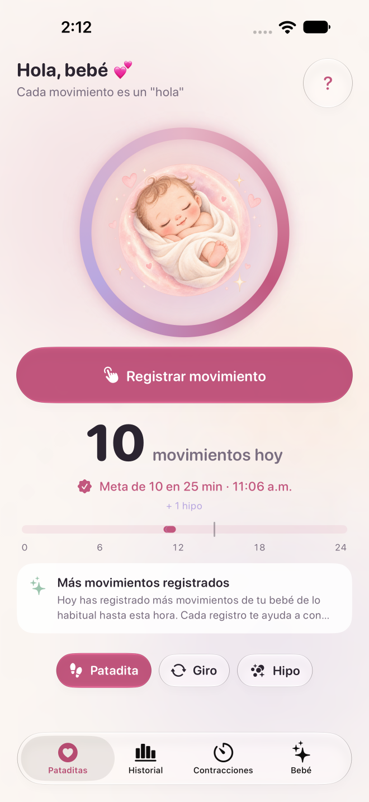

Pataditas / Cómo usar Pataditas
Cómo registrar los movimientos de tu bebé en Pataditas
Pataditas es un diario privado de embarazo para iPhone. Tú registras los movimientos que sientes y la app guarda la hora y el tipo. Esta guía explica cómo usar el producto; no indica un método médico de conteo.
Próximamente en App Store. La versión pública para iPhone está pendiente de revisión por Apple.
Registra un movimiento en cuatro pasos
Abre la pantalla de movimientos
Completa u omite la personalización opcional. Si aparece la oferta de Plus, ciérrala para continuar con el conteo gratis.
Elige el tipo de movimiento
Selecciona Patadita, Giro o Hipo. El hipo se guarda en el diario, pero no cuenta para el grupo de movimientos.
Toca Registrar movimiento
Usa el botón con ese nombre o la ilustración central. Cada toque guarda un registro con su hora; no necesitas iniciar un cronómetro.
Corrige un toque accidental
Usa la opción temporal Deshacer justo después de registrar si te equivocaste.

Qué muestran el historial y las gráficas
El historial gratis muestra los últimos siete días. Plus agrega el historial completo del embarazo, gráficas de patrones y un reporte PDF. Las comparaciones usan solo lo que registraste; omitir registros puede cambiarlas.
Qué significa la celebración de 10 movimientos
Pataditas agrupa 10 patadas o giros registrados dentro de dos horas. No evalúa la salud del bebé ni establece una meta diaria universal. Sigue las indicaciones de tu equipo médico.
Tus registros siguen siendo privados
Puedes registrar movimientos sin internet. Con iCloud activado, se sincronizan mediante tu cuenta privada de iCloud. No necesitas una cuenta de Pataditas y la persona desarrolladora no puede leer tu diario.
Tus registros siguen siendo privados →
Fuentes y alcance
Esta guía fue escrita por el equipo desarrollador y no ha recibido revisión clínica. Consulta a tu equipo médico para temas de salud. Lee la orientación del NHS sobre movimientos del bebé y la información de Count the Kicks.